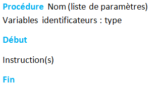
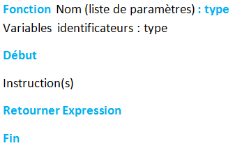

- Introduction:
Lorsque l’on progresse dans la conception d’un algorithme, ce dernier peut prendre une taille et une complexité croissante. De même des séquences d’instructions peuvent se répéter à plusieurs fois.
Lorsque un algorithme dépasse deux page ou plus devient difficile à comprendre et à gérer par les programmeurs. La solution consiste alors à découper l’algorithme en plusieurs parties plus petites. Ces parties sont appelées des sous-algorithmes.
Le sous-algorithme est écrit séparément du corps de l’algorithme principal et sera appelé par celui-ci quand ceci sera nécessaire.
Il existe deux sortes de sous-algorithme : les procédures et les fonctions.
-
Les Procédures :
Une procédure est une série d’instruction regroupées sous un nom, qui permet d’effectuer des actions par un simple appel de la procédure dans un algorithme ou
dans un autres sous algorithme. Une procédure renvoie plusieurs valeurs (pas une) ou aucune valeur.
Syntaxe :

Après le nom de la procédure, il faut donner la liste des paramètres (s’il en a) avec leur type respectif. Ces paramètres formels . Leur valeur n’est pas connue lors de la création de la procédure.
Syntaxe : Nom_procédure (…………..)
Les paramètres utilisées lors de l’appel d’une procédure sont appelés paramètres effectifs. Ces paramètres donneront leurs valeurs aux paramètres formels.
- Les Fonctions
Les fonctions sont des sous algorithme admettant des paramètres (ou sans paramètres) et retournant une seule valeur de type simple qui peut apparaître dans une expression,
dans une comparaison, à la droite d’une affectation, etc.
Syntaxe :

La syntaxe de la déclaration d’une fonction est assez proche de celle d’une procédure à laquelle on ajoute un type qui représente le type de la valeur retournée
par la fonction et une instruction Retourner Expression . Cette dernière instruction renvoie au programme appelant le résultat de l’expression placée à la suite du mot clé Retourner.
Pour exécuter une fonction, il suffit de faire appel à elle en écrivant son nom suivi des paramètres effectifs. C’est la même syntaxe qu’une procédure.
A la différence d’une procédure, la fonction retourne une valeur. L’appel d’une fonction pourra donc être utilisé dans une instruction (affichage, affectation …) qui utilise sa valeur.
Syntaxe : Nom_fonction (…………..)
- La differance entre le procedure et la fonction

 Saisir (@x:entier,y:entier)
Saisir (@x:entier,y:entier)